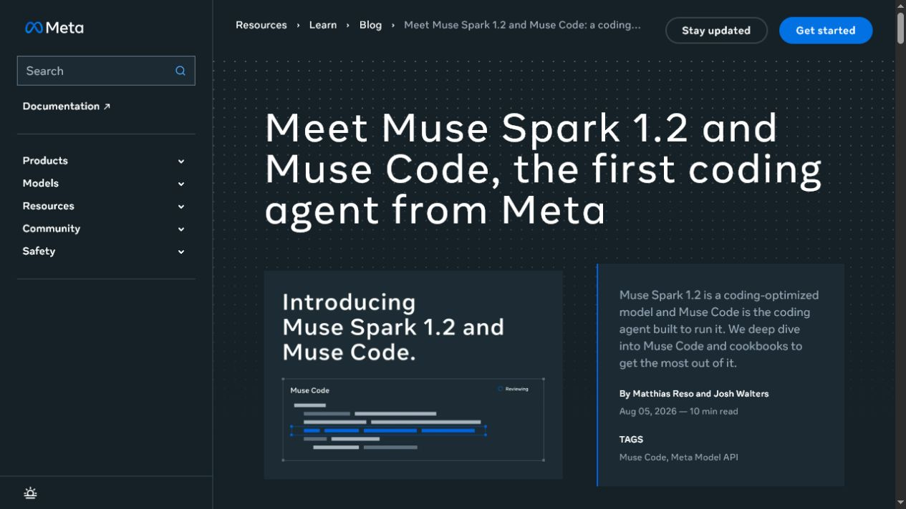
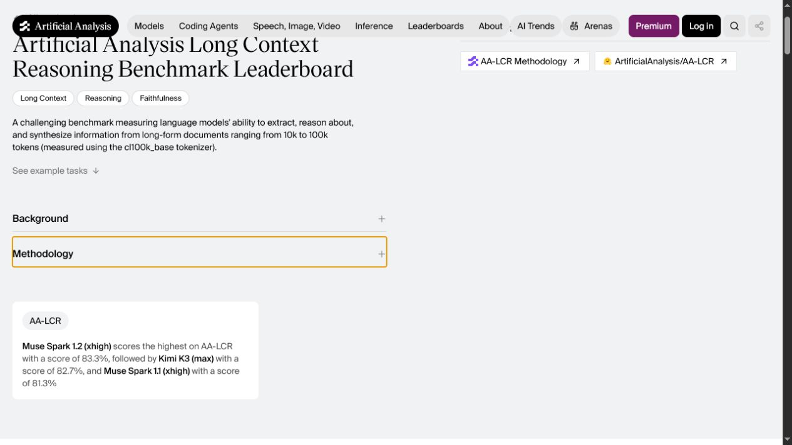
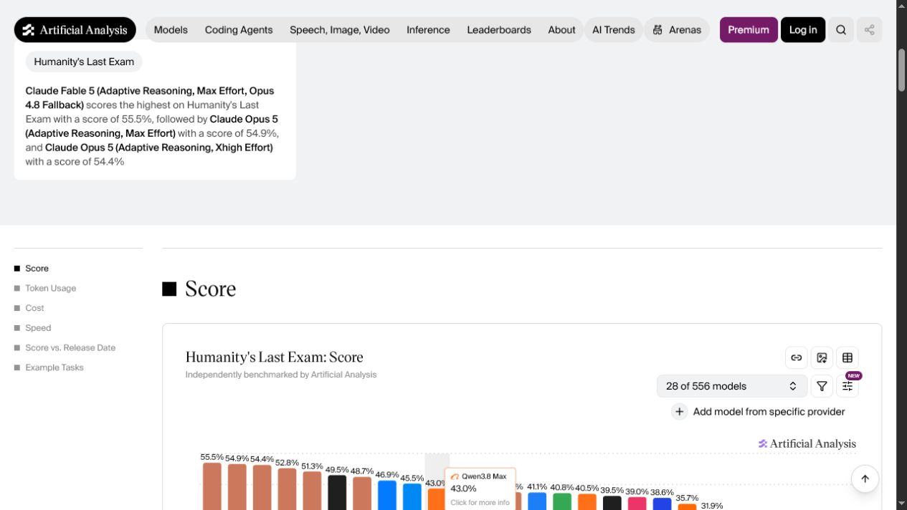
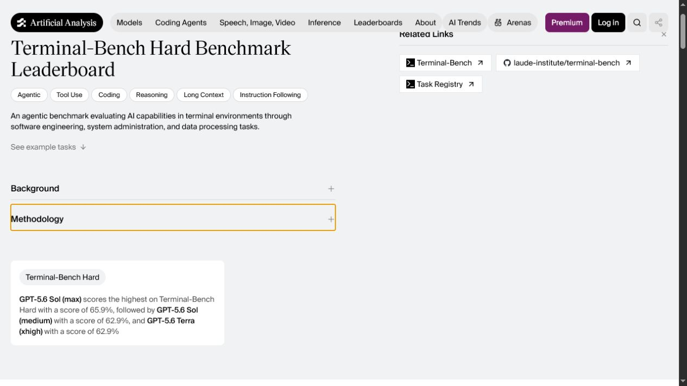
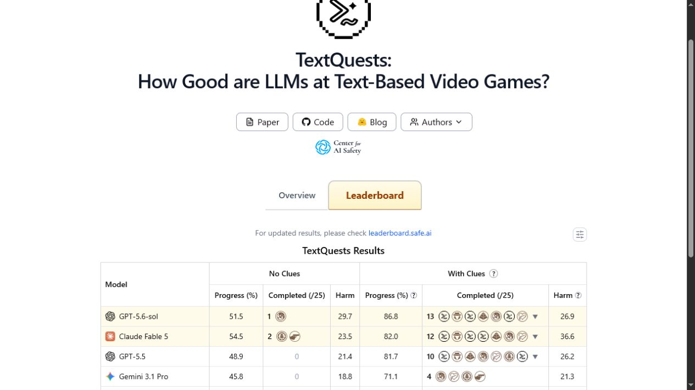
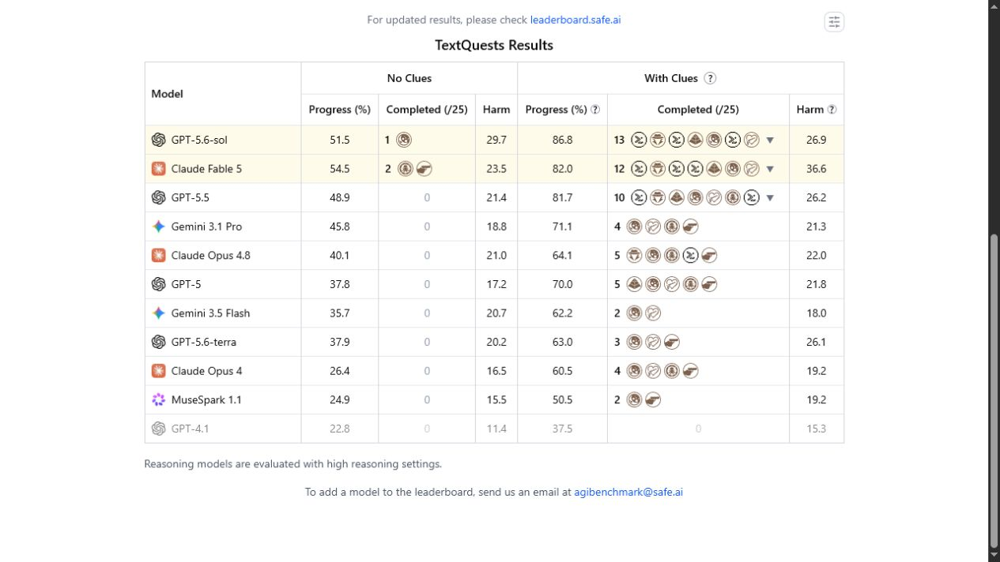
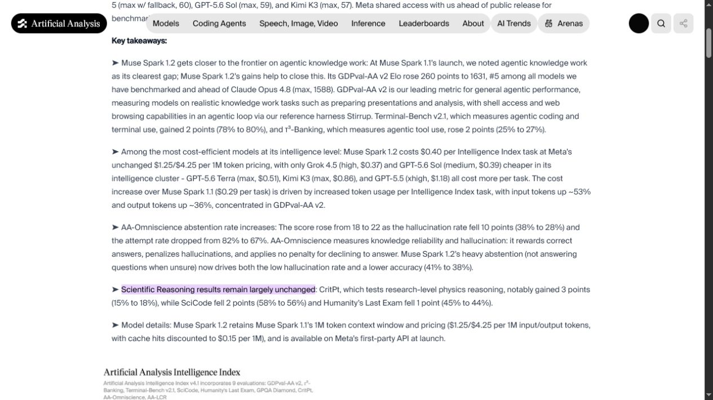

Muse Spark 1.2 and four leaderboard deltas
The mandatory top-row diff covered all 19 production benchmarks against the complete 138-model inventory. The reviewed batch creates three configuration-specific model records and carries six insertions plus three explicit same-source replacements. No benchmark is created and no incompatible protocol or ambiguous configuration is merged.
Accepted production changes
All five affected benchmarks use a stored scale of 0–1000, so a displayed percentage is multiplied by ten. Examples: 83.3% → 833, 55.5% → 555, and 37.9% → 379.
| Operation | Model | Benchmark | Visible value | Stored raw | Evidence |
|---|---|---|---|---|---|
| Insert | Muse Spark 1.2 (xhigh) | AA Long Context Reasoning | 83.3% | 833 | AA-LCR current score card |
| Insert | Muse Spark 1.1 (xhigh) | AA Long Context Reasoning | 81.3% | 813 | AA-LCR current score card |
| Replace 53.3% | Claude Fable 5 (adaptive max/fallback) | Humanity's Last Exam | 55.5% | 555 | Artificial Analysis HLE |
| Replace 52.6% | Claude Opus 5 (adaptive max) | Humanity's Last Exam | 54.9% | 549 | Artificial Analysis HLE |
| Replace 52.5% | Claude Opus 5 (adaptive xhigh) | Humanity's Last Exam | 54.4% | 544 | Artificial Analysis HLE |
| Insert | Muse Spark 1.2 (xhigh) | Humanity's Last Exam | 44% | 440 | Muse Spark 1.2 analysis |
| Insert | Muse Spark 1.2 (xhigh) | SciCode | 56% | 560 | Muse Spark 1.2 analysis |
| Insert | GPT-5.6 Sol (medium) | Terminal-Bench Hard | 62.9% | 629 | Terminal-Bench Hard score card |
| Insert | GPT-5.6 Terra | TextQuests, No Clues | 37.9% | 379 | TextQuests current table |
Meta's first-party release identifies Muse Spark 1.2 as a coding-optimized, reasoning-capable model released on 5 August 2026 with a 1M-token context window. Artificial Analysis identifies the evaluated configuration as xhigh. The bare Muse Spark 1.1 record used by Scale remains distinct from the new AA Muse Spark 1.1 (xhigh) record.
Mandatory 19-benchmark top-row sweep
| Tracked benchmark | Current official/source observation | Decision |
|---|---|---|
| ARC-AGI-3 | Competition, benchmark page, and verified leaderboard opened; no fresh compatible model row beyond current production coverage. | No write. |
| APEX-Agents-AA | Current summary remains Gemini 3.5 Flash (high) 47.1%, Kimi K3 (max) 41.3%, GPT-5.6 Terra (max) 38.9%. | No delta. |
| Humanity's Last Exam | AA now shows Fable adaptive max/fallback 55.5%, Opus adaptive max 54.9%, Opus adaptive xhigh 54.4%; its Muse 1.2 analysis shows 44%. | Three same-source replacements and one insert. |
| SciCode | The official project leaderboard remains its older direct-model table; AA's release evaluation shows Muse Spark 1.2 (xhigh) at 56% under the same SciCode protocol used by existing curated AA rows. | Insert Muse 1.2. |
| Terminal-Bench Hard | AA's separate Hard protocol shows GPT-5.6 Sol (max) 65.9%, Sol (medium) 62.9%, Terra (xhigh) 62.9%. | Insert only Sol medium. |
| SWE-Bench Pro | Scale's public, mini-SWE-agent table still leads with Muse Spark 1.1 at 61.50%; no new compatible row since the prior run. | No write. |
| DeepSWE | Visible update date changed to 7 August; top rows remain Opus 5 max 74% and GPT-5.6 Sol max 73%. Qwen3.8-Max xhigh 57% still lacks reliable first-party identity. | No write; Qwen deferred. |
| SpatialViz | Paper remains v7 (16 March 2026) with public code/data and no fresh compatible frontier table. | No write. |
| EnigmaEval | Scale still labels the table update 23 July; visible top five match production after the 6 August batch. | No delta. |
| ARC-AGI-2 | ARC Prize benchmark and verified leaderboard opened; no fresh verified model row beyond the currently curated frontier. | No write. |
| TextQuests | No Clues now shows Fable 5 54.5%, GPT-5.6 Sol 51.5%, GPT-5.5 48.9%, and Terra 37.9%. The page globally says reasoning models use high settings but does not configure every row name. | Insert Terra; defer ambiguous/source-migration rows. |
| IntPhys 2 | Meta's benchmark publication remains dated June 2025; no fresh official scored frontier table. | No write. |
| ERQA | Official repository and harness remain public; no fresh scored frontier table is exposed. | No write. |
| MMMU-Pro | Official page still says last updated 5 September 2025 and exposes no newer compatible top rows. | No write. |
| SWE-bench Verified | Official bash-only protocol and leaderboard checked; no clearly compatible fresh row absent from production. | No write. |
| MindCube | Paper remains v2 (31 March 2026) and offers no new compatible official leaderboard row. | No write. |
| AA Long Context Reasoning | The prior contradiction is resolved: both summary and FAQ identify Muse Spark 1.2 xhigh 83.3% as highest; Kimi K3 max is 82.7% and Muse Spark 1.1 xhigh is 81.3%. | Insert both Muse configs; defer Kimi source migration. |
| Tau2-Bench Telecom | Official research page and protocol checked; no fresh compatible scored row beyond production. | No write. |
| SkateBench | SkateBench v2 still shows Gemini 3.1 Pro as the visible leader and the current GPT-5.4 effort rows; production already covers them. | No delta. |
Provider release sweep
OpenAI The newsroom's latest general model remains GPT-5.6; no new released text model after the prior run. Anthropic Opus 5 (24 July) remains the latest product model. Google DeepMind August news is scientific forecasting; no new general Gemini release. SpaceXAI Imagine Image 2.0 launched 7 August but is outside the tracked text-model scope. DeepSeek The latest API changelog entry remains the 31 July V4-Flash update. Qwen The current research feed does not provide a trustworthy first-party identity for the DeepSWE label Qwen3.8-Max. Meta Muse Spark 1.2 launched 5 August and is accepted with configuration-specific evidence. Moonshot Kimi K3 remains the current first-party release; the AA-LCR value is not written because the curated pair currently belongs to a different source identity.
Deferred items and new benchmark candidates
| Candidate | Why it is not written |
|---|---|
| Kimi K3 (max) — AA-LCR 82.7% | The existing curated pair uses the Moonshot repository as its source. Adding AA as a second source would average old and new evidence; source retirement needs an explicit migration path. |
| GPT-5.5 — TextQuests 48.9% | The existing curated pair uses dashboard.safe.ai; the current table is www.textquests.ai. Same source-migration blocker. |
| Claude Fable 5 — TextQuests 54.5% | Row name omits the exact Fable effort/fallback configuration. The page-wide “high reasoning” note is insufficient to distinguish existing Fable variants. |
| Gemini 3.5 Flash — TextQuests 35.7% | Row name omits the medium/high variant; no safe mapping. |
| Qwen3.8-Max — DeepSWE 57% | No reliable first-party release/model-card identity found in Qwen's current research feed. |
| EnterpriseOps-Gym-AA | Promising, authoritative enterprise-workflow benchmark with live tool use, but still new. Re-check adoption, harness/version stability, public reproducibility, and score spread next run. |
| AI Security Leaderboard / FAR.AI Minimal Standard | Public and relevant to safeguards, but it measures defense coverage rather than general model capability; fit with SupraBench dimensions needs methodology review. |
| Terminal-Bench 2.1 | Separate 89-task verified refresh; never map its results into Terminal-Bench Hard. |
Visible evidence







Controls and publish checks
- Pre-write production inventory: 138 models, 19 benchmarks, Convex 542, D1 542, drift 0.
- Filesystem lifecycle, HTTPS, Git remote, and the static
example.comin-app-browser screenshot control passed before research. - Local validation passed (3 models, 0 benchmarks, 9 scores, 7 evidence files, 35 sources); 108/108 tests passed; the reviewed dry-run planned exactly 3 model creates, 6 score inserts, and 3 same-source replacements; production apply matched that plan; Convex and D1 are aligned at 548/548 with drift 0; the post-apply dry-run reports all 9 scores unchanged; the credential scan is clean. Commit
aa1f407was pushed fast-forward, Pages deployed successfully, and the public report plus all 7 affected model pages and all 5 affected benchmark pages passed visible live verification.
Sources
The complete machine-readable source list, access timestamps, accepted batch, and screenshot mapping are in manifest.json. Primary or official pages were used wherever available; third-party discovery results were not accepted as final evidence.
Next-run learnings
- Keep the static screenshot control first.
- Re-check AA pages after evaluator/index patch releases; same-source values can move materially.
- Do not add a second source merely to update an existing model-benchmark pair.
- Resolve TextQuests row configurations before writing Fable or Gemini values.
- Keep Terminal-Bench 2.1 separate from Terminal-Bench Hard.
- Re-check Qwen3.8-Max only after first-party identity is available.
- Reassess EnterpriseOps-Gym-AA adoption and reproducibility.